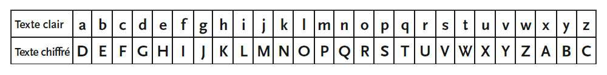

Le chiffrement par décalage de César compte parmi les plus élémentaires des chiffrements par substitution --
ceux qui consistent à remplacer les lettres du texte clair par les lettres correspondantes de l'alphabet du texte chiffré.
Bien que cette méthode n'ait certainement pas été inventée par le célèbre empereur, elle lui doit son nom en raison de ce passage de la Vie des douze Césars de Suétone :
« On possède enfin de César des lettres à Cicéron, et sa correspondance avec ses amis sur ses affaires domestiques. Il y employait, pour les choses tout à fait secrètes, une espèce de chiffre qui en rendait le sens inintelligible (les lettres étant disposées de manière à ne jamais pouvoir former un mot),
et qui consistait, je le dis pour ceux qui voudront les déchiffrer, à changer le rang des lettres dans l'alphabet, en écrivant la quatrième pour la première, c'est-à-dire le d pour le a, et ainsi de suite ».
Le chiffrement s'effectue très facilement, en listant les lettres de l'alphabet les unes à la suite des autres, puis en plaçant au-dessous ces mêmes lettres décalées d'un certain nombre de rang donné.
Le décalage évoqué par Suétone dans sa biographie donnerait donc lieu à ce tableau :

Pour chiffrer un message, il suffit alors de remplacer la lettre prise dans la première ligne par la lettre correspondante dans la seconde.
Ainsi, « Prends garde aux Ides de Mars » se transforme en « Suhqgv jdugh dxa Lghv gh Pduv ».
Pour déchiffrer le message, son destinataire ne doit connaître que le nombre de positions dont l'alphabet a été décalé.
Ce type de transformation se nomme ROTN, où N désigne le nombre de positions en question. Avec un alphabet décalé de trois places, le décalage de César est donc une transformation ROT3.